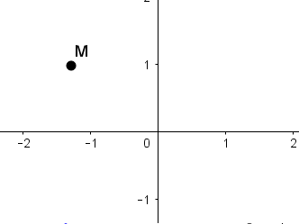

Exercices corrigés - Nombres complexes : géométrie
Représentation géométrique des nombres complexes
Enoncé 
- On considère le nombre complexe $z=3-2i$. Placer dans le plan complexe les points $A,B,C,D$ d'affixes respectives $z$, $\bar z$, $-z$ et $-\bar z$.
- Placer dans le plan complexe les points $E,F,G,H$ d'affixes respectives $$z_E=2e^{i\pi/3},\ z_F=-e^{i\pi/6},\ z_G=-z_E\times z_F,\ z_H=\frac{-z_F}{z_E}.$$

Enoncé
Le point $M$ de la figure ci-dessous à pour affixe $z$. Reproduire la figure et tracer :
- en vert l'ensemble des points dont l'affixe non nulle $z'$ est telle que $$\arg(z')=\arg(z)+\frac\pi 2\ [2\pi].$$
- en bleu l'ensemble des points dont l'affixe non nulle $z'$ est telle que $$|z'|=2|z|.$$
- en noir l'ensemble des points dont l'affixe non nulle $z'$ est telle que $$\arg(z')=\arg(z)\ [\pi].$$
- en rouge l'ensemble des points dont l'affixe non nulle $z'$ est telle que $$\arg(z')=\arg(z)+\arg(\bar z)\ [2\pi].$$

Enoncé
Dans le plan rapporté à un repère orthonormé $(O,\vec u,\vec v)$, on considère les points $A$, $B$, $C$ et $D$ d'affixes respectives $a=-1+i$, $b=-1-i$, $c=2i$ et $d=2-2i$.
- Placer ces points.
- Calculer $\frac{c-a}{d-a}$ et en déduire la nature du triangle $ACD$.
- Montrer que les points $A$, $B$, $C$ et $D$ sont sur un même cercle dont on précisera le centre et le rayon.
Exercice 4 - Écriture complexe de transformations ♡ [Signaler une erreur] [Ajouter à ma feuille d'exos]
Enoncé
Déterminer la nature et les éléments caractéristiques des transformations géométriques données par l'écriture complexe suivante :
$$\begin{array}{ll}
\mathbf 1.\ z\mapsto \frac 1iz&\mathbf 2.\ z\mapsto z+(2+i)\\
\mathbf 3.\ z\mapsto (1+i\sqrt 3)z+\sqrt 3(1-i)&\mathbf 4.\ z\mapsto (1+i\tan\alpha )z-i\tan\alpha,\ \alpha\in [0,\pi/2[.
\end{array}$$
Enoncé
Dans le plan complexe, on considère les points $A,$ $B,$ $C$ et $D$ d'affixe respective $1,$ $-1$, $i$ et $-i.$ On note $\mathcal C$ le cercle unité, c'est-à-dire l'ensemble des nombres complexes de module 1. Si $M$ est un point de $\mathcal C,$ on note $p(M)$ le produit des distances de $M$ aux points $A,B,C,D$ :
$$p(M)=MA\times MB\times MC\times MD.$$
Déterminer le maximum de $p(M)$ lorsque $M$ décrit $\mathcal C.$
Enoncé
Soit $a$ un nombre complexe de module 1, $z_1,\dots,z_n$ les racines de l'équation $z^n=a$. Montrer que les points du plan complexe dont
les affixes sont $(1+z_1)^n,\dots,(1+z_n)^n$ sont alignés.
Enoncé
Montrer que le triangle de sommets $M_1(z_1)$, $M_2(z_2)$ et $M_3(z_3)$ est équilatéral si et seulement si
$$z_1^2+z_2^2+z_3^2=z_1z_2+z_1z_3+z_2z_3.$$
Exercice 8 - Une condition d'alignement sur les affixes ♡ [Signaler une erreur] [Ajouter à ma feuille d'exos]
Enoncé
Soit $A(a)$, $B(b)$ et $C(c)$ trois points du plan complexe. Démontrer que $A,\ B$ et $C$ sont alignés si et seulement si
$$a\bar b+b\bar c+c\bar a\in\mathbb R.$$
Lieux géométriques
Enoncé
Déterminer le lieu géométrique des points $M$ dont l'affixe $z$ vérifie
$$
\begin{array}{ll}
\mathbf{1.}\ |z-i|=|z+i|&
\mathbf{2.}\ \displaystyle \frac{|z-3+i|}{|z+5-2i|}=1\\
\mathbf{3.}\ |(1+i)z-2i|=2&
\mathbf{4.}\ \displaystyle \ |3+iz|=|3-iz|
\end{array}$$
Enoncé
Le plan est rapporté à un repère orthonormé direct $(O,\vec u,\vec v)$. Déterminer l'ensemble des points $M$ dont l'affixe $z$ vérifie la relation demandée :
$$
\begin{array}{lll}
\mathbf{1.}\ \arg(z-2)=\frac{\pi}2\ [2\pi]&
\mathbf{2.}\ \arg(z-2)=\frac{\pi}2\ [\pi]&
\mathbf{3.}\ \arg(iz)=\frac{\pi}{4}\ [\pi]\\
\mathbf{4.}\ \arg\left(\frac{z}{1+i}\right)=\frac{\pi}2\ [2\pi]&
\mathbf{5.}\ \arg\left(\frac{z-2i}{z-1+i}\right)=\frac{\pi}2\ [\pi]
\end{array}
$$
Enoncé
Décrire les points $M$ d'affixe $z\neq -5+3i$ tels que
- $\displaystyle \frac{z-1+i}{z+5-3i}$ est un réel;
- $\displaystyle \frac{z-1+i}{z+5-3i}$ est un imaginaire pur.
Enoncé
Dans le plan complexe muni d'un repère orthonormé $(O,\vec u,\vec v)$, on associe à tout point $M$ d'affixe $z$ le point $M'$ d'affixe $z'=\frac 12\left(z+\frac 1z\right)$. On dit que $M'$ est l'image de $M$ par la transformation $z\mapsto \frac 12\left(z+\frac 1z\right)$.
- Déterminer l'ensemble des points $M$ du plan tels que $M=M'$.
- Démontrer que, lorsque $M$ décrit le cercle $\Gamma$ de centre $O$ et de rayon $1$, alors $M'$ décrit un segment que l'on précisera.
Enoncé
Pour chacune des conditions suivantes, déterminer le lieu géométrique des points $M$ d'affixe $z$ qui vérifient la condition.
- $I(i)$ et $M'(iz)$ sont alignés avec $M$; déterminer alors l'ensemble des points $M'$ correspondants;
- $\displaystyle \Re e\left(\frac{z-1}{z-i}\right)=0$;
- $M$, $P$ d'affixe $z^2$ et $Q$ d'affixe $z^3$ sont les sommets d'un triangle rectangle.
Enoncé
Trouver tous les nombres complexes $z$ tels que les points d'affixe $z$, $z^2$ et $z^4$ soient alignés.
Démontrer avec des nombres complexes
Enoncé
Les points $A$, $B$, $C$ et $D$ du plan complexe ont pour affixes respectives $a$, $b$, $c$ et $d$. On note $I$, $J$, $K$ et $L$ les milieux respectifs de $[AB]$, $[BC]$, $[CD]$ et $[DA]$.
- Calculer les affixes des points $I$, $J$, $K$ et $L$.
- En déduire que $IJKL$ est un parallélogramme.
Enoncé
Soit la figure suivante :
 Le but de l'exercice est de démontrer que $\alpha+\beta+\gamma=\frac{\pi}{4}\ [2\pi]$. On se place dans le repère orthonormé direct $(A,\vec u,\vec v)$ où $\vec u=\overrightarrow{AB}$ et $\vec v=\overrightarrow{AD}$.
Le but de l'exercice est de démontrer que $\alpha+\beta+\gamma=\frac{\pi}{4}\ [2\pi]$. On se place dans le repère orthonormé direct $(A,\vec u,\vec v)$ où $\vec u=\overrightarrow{AB}$ et $\vec v=\overrightarrow{AD}$.
- Reproduire la figure et placer les points $E$ et $F$ sur $[DZ]$ tels que $\beta$ et $\gamma$ soient des mesures respectives de $(\vec u,\overrightarrow{AE})$ et $(\vec u,\overrightarrow{AF})$.
- Quelles sont les affixes $z_Z,$ $z_E$ et $z_F$ des points $Z$, $E$ et $F$?
- Démontrer que $z_Z\times z_E\times z_F=65(1+i)$.
- Conclure.

Enoncé
Dans le plan muni d'un repère orthonormal $(O,\vec i,\vec j)$, on note $A_0$ le point d'affixe 6 et $S$ la similitude de centre $O$, de rapport $\frac{\sqrt 3}2$ et d'angle $\frac\pi 6$. On pose $A_{n+1}=S(A_n)$ pour $n\geq 1$.
- Déterminer, en fonction de $n$, l'affixe du point $A_n$. En déduire que $A_{12}$ est sur la demi-droite $(O,\vec i)$.
- Établir que le triangle $OA_nA_{n+1}$ est rectangle en $A_{n+1}$.
- Calculer la longueur du segment $[A_0A_1]$. En déduire la longueur $\ell$ de la ligne polygonale $A_0A_1A_2\dots A_{12}.$
Enoncé
Soit $ABCD$ un carré dans le plan complexe. Prouver que, si $A$ et $B$ sont à coordonnées entières,
il en est de même de $C$ et $D$. Peut-on trouver un triangle équilatéral dont les trois sommets sont à coordonnées entières?
Enoncé
On se place dans le plan rapporté à un repère orthonormé $(O,\vec i,\vec j)$.
- Soit $A$ et $B$ deux points du plan, d'affixes respectives $a$ et $b$. Donner les affixes $p$ et $p'$ des centres $P$ et $P'$ des deux carrés de côté $[AB]$.
- Soit $ABC$ un triangle du plan. On considère les trois carrés extérieurs aux côtés du triangle, et on note $P$, $Q$ et $R$ les centres respectifs des carrés de côté $[AB]$, $[BC]$ et $[CA]$.
- Donner les affixes $p$, $q$ et $r$ des points $P$, $Q$ et $R$ en fonction des affixes $a$, $b$ et $c$ des points $A$, $B$ et $C$.
- Montrer que les triangles $ABC$ et $PQR$ ont même centre de gravité.
- Démontrer que $PR=AQ$ et que les droites $(AQ)$ et $(PR)$ sont perpendiculaires.
- Démontrer que les droites $(AQ)$, $(BR)$ et $(CP)$ sont concourantes.
Enoncé
Soient $A$, $B$ et $C$ trois points non alignés d'affixe $a$, $b$ et $c$. On note $j=e^{2i\pi/3}$.
- Montrer que le triangle $ABC$ est équilatéral direct si et seulement si $a+bj+cj^2=0$.
- On ne suppose pas nécessairement que $ABC$ est équilatéral. On construit à partir de $ABC$ les trois triangles équilatéraux de base $AB$, $AC$ et $BC$ construits à l'extérieur du premier. Montrer que les centres de gravité de ces trois triangles forme un triangle équilatéral.
Consulter aussi